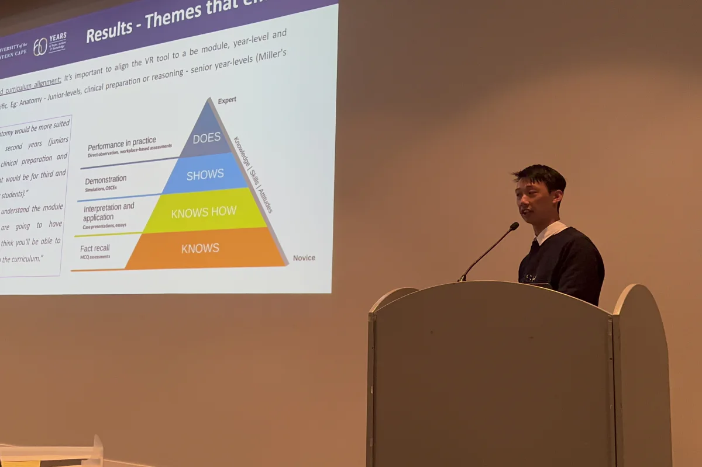
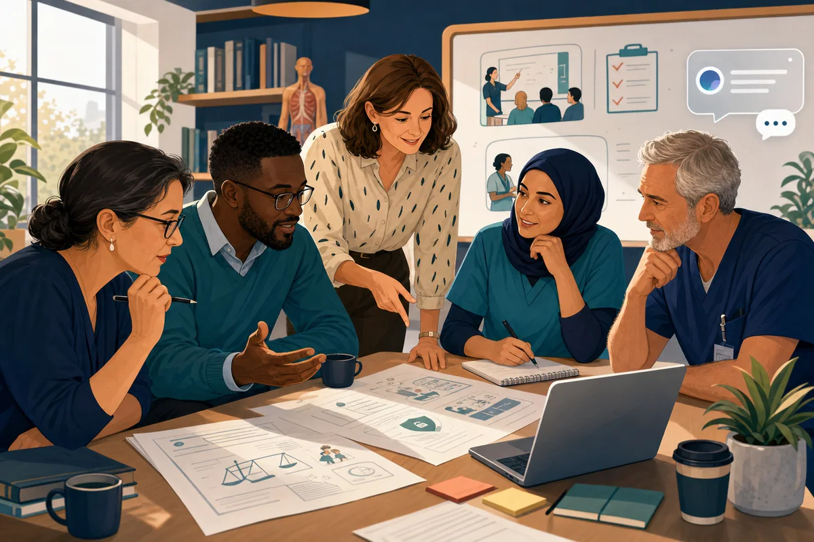
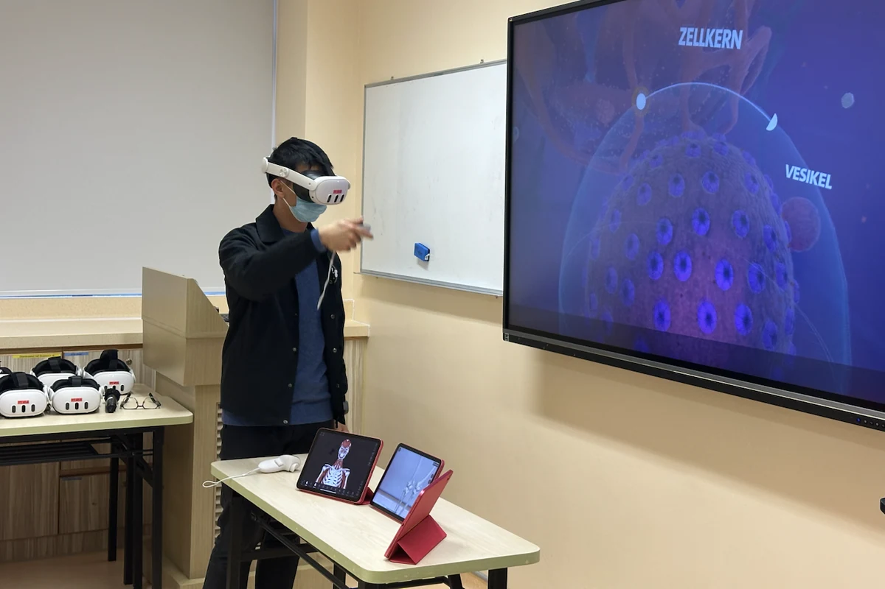
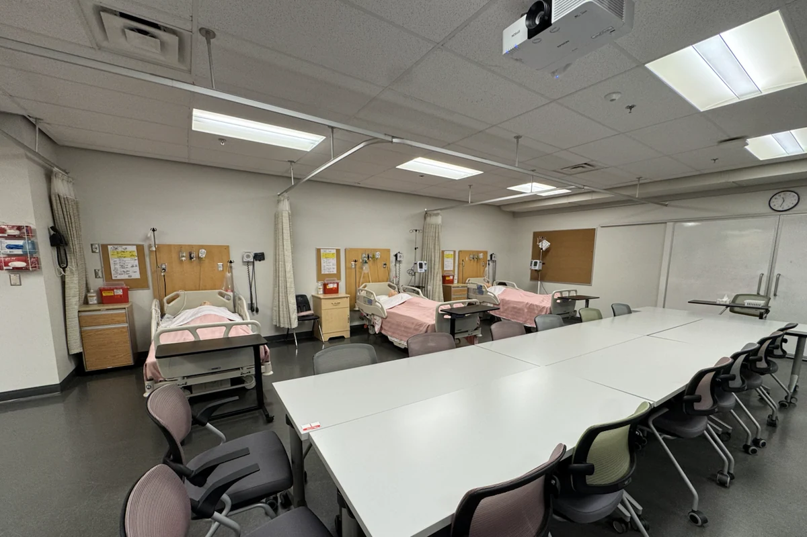
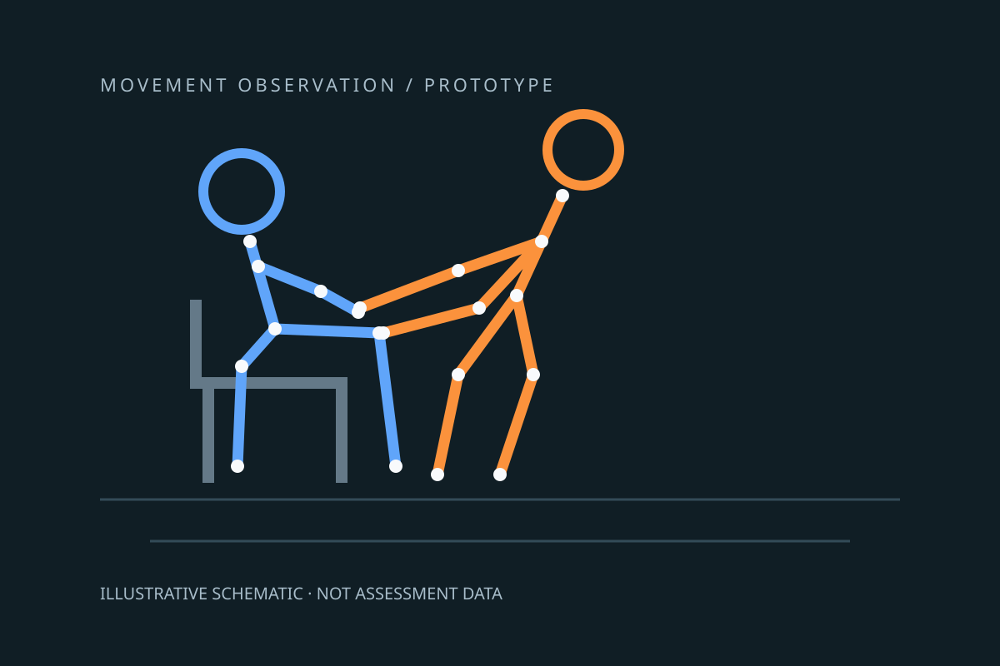
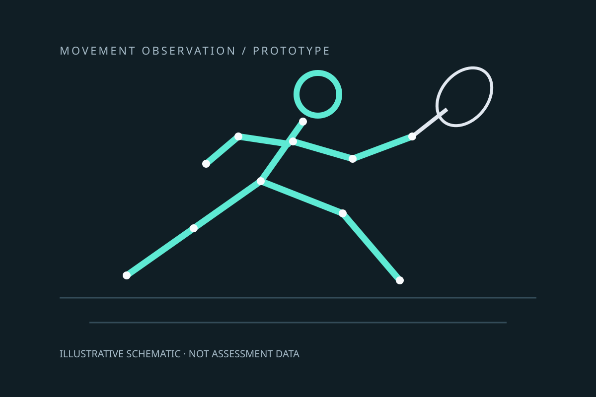

研究
研究
我的研究位於物理治療、健康專業教育、學習設計與新興科技的交匯點，探討教育創新如何配合課程、持續實施、得到適切評估，並轉化為具意義的學生與專業學習。
工作如何連結
從學習準備走向臨床責任
這些並非彼此分割的科技，而是一條通往更安全、更負責任專業判斷的學習路徑。
- 虛擬實境看見、體驗與練習
- 人工智能推理、提問與挑戰
- 模擬預演、接收回饋與調整
- 臨床實習轉移學習並承擔責任
科技協助準備；臨床經驗讓學習變得真實。
實施案例
融入課程的針灸虛擬實境
- 教育需要
- 學生需要有結構的練習機會，連結解剖、穴位定位、操作推理與安全。
- 我的貢獻
- 我開發並實施涵蓋理論、訓練、練習及評估的學習流程，加入安全提示並配合課程。
- 實施證據
- 學習者已使用此應用程式，並產生練習與使用紀錄。這些資料有助檢視實施情況，但不能證明臨床能力有所提升。
- 下一步評估
- 持續評估可用性、學習設計，以及虛擬練習與受督導實體練習之間的關係。
人工智能支援的臨床交接
- 教育需要
- 學習者需要演練與回饋，練習組織及傳達臨床交接資訊。
- 我的貢獻
- 我在三年級模擬教學中實施採用假名識別的聊天機械人流程，並檢視學習互動、表現及使用紀錄。
- 實施證據
- 此工作支持檢視學習表現、管治與可用性。這項模擬活動與公開網站的技能導師是不同系統。
- 下一步評估
- 在保留教育工作者督導及保障學習者資料的前提下，改進學習流程、回饋與管治。
負責任地在評估中使用人工智能
- 教育需要
- 精美的人工智能輔助作業，可能掩蓋學生獨立理解的不足。
- 我的貢獻
- 我保留人工智能支援準備與協作分析，並在小組匯報後加入結構化隨機答辯：任何組員均可能須就任何實質部分答辯，範疇與準則則保持一致。
- 實施證據
- 此設計提供額外機會檢視理解。未預先見過的知識遷移任務仍屬下一階段建議。
- 下一步評估
- 評估活動能否呈現推理、作品的掌握程度，以及應用知識的能力。
獲資助的教育發展項目
擔任兩項聖方濟各大學院校發展資助項目的共同研究員，項目總額為港幣339,800元。這是協作項目的預算，並非個人獎項，也不是學習成效的證據。
2026 · IDG250204 · HK$194,000
物理治療模擬教學中的同儕病人與同儕反思引導者角色
以混合研究方法評估學習及臨床實習準備。
2026–2028 · IDG250202 · HK$145,800
護理與物理治療學生的跨專業模擬教學
評估跨專業教育模擬課程。
研究方法
學習設計先於科技
我的研究採用一致的邏輯：先找出教育問題，設計學習過程，只在科技能增值時才採用，並評估學習能否轉移至實務。
人工智能作為思考伙伴
學生應先自行推理，人工智能再用作提問、挑戰及擴闊討論；最終判斷仍須由學習者核實、修正及論證。
- 推理
- 提問
- 挑戰
- 核實
- 修正
- 論證
實用設計路徑
VRILO 路徑
VRILO 是設計及實施虛擬實境學習的七階段實用路徑。它是一項持續發展的設計指南，並非已獲普遍驗證的框架。
- 01界定教育問題
- 02訂立預期學習成果
- 03判斷虛擬實境是否合適
- 04設計學習體驗
- 05準備實施與支援
- 06配合評估、可及性與公平
- 07評估、修正及規劃可持續性

標誌性工作
已實施 · 持續評估虛擬實境針灸學習
把空間性強且重視安全的技能，轉化為準備、練習與評估的結構化循環。

貢獻與證據
- 我的角色
- 教育設計者及講師，支援項目發展與課程整合。
- 可閱覽的資料
- 教學頁介紹課程與學習設計。本網站不提供此虛擬實境應用程式的公開下載。 探索學習設計
- 證據的範圍
- 已實施及有學習者使用，屬於實施證據，並不能證明臨床能力有所提升。評估與課程改進仍在進行。
學生需要反覆連接解剖、穴位定位、安全與程序推理，但受時間、場地及督導所限，練習機會有限。
建立配合課程的虛擬實境應用程式，設有訓練、練習及評估模式，並加入使用前準備與使用後解說。
空間定位、解剖關係、程序次序、安全判斷及技術解釋。
現行項目：正在發展及整合至課程。
延伸思考
相關文章
標誌性工作
教學資源健康專業人工智能素養
協助學習者核實、披露、質疑，並為人工智能輔助工作負責。

使用聊天機械人並不等於理解幻覺、偏見、私隱、核實及專業問責。
發展課程設計提示、反思文章及簡短互動知識檢查，讓負責任使用的決定變得具體。
來源核實、私隱判斷、偏見意識、披露、任務選擇及最終決定責任。
現行教學資源及課程發展主題。
標誌性工作
試點臨床推理聊天機械人
讓人工智能在提供答案前，先提出更好的問題。

貢獻與證據
- 我的角色
- 研究人員及教育設計者，帶領試點概念與學習設計。
- 可閱覽的資料
- 連結文章介紹以推理為先的方法，並非已完成的成效研究報告，也不是研究試行系統的入口。 閱讀以推理為先的方法
- 證據的範圍
- 研究試行仍在發展。公開技能實驗室的導師屬另一項服務；該服務可用並不代表研究試行已證實有效。
人工智能可在學生辨認紅旗、比較假設或解釋計劃前，產生看似合理的臨床答案。
發展優先處理安全篩查、分階段提問、解釋及反思的試點聊天機械人，其後才顯示建議。
紅旗辨認、假設建立、證據使用、優先次序、解釋及批判審視人工智能輸出。
試點研究發展中；目前並未宣稱具成效。
延伸思考
相關文章
標誌性工作
已實施運用虛擬實境教授人體生理學
以沉浸體驗連接結構、功能、動作與臨床意義。

當學生只透過圖表、投影片或孤立事實學習時，動態生理關係仍可能十分抽象。
把短時間沉浸體驗放進完整課堂流程：準備、引導觀察、個案應用、同儕解釋及解說。
三維關係、結構與功能連接、觀察、解釋及轉移至臨床個案。
教學方法正在反覆發展。
延伸思考
相關文章
標誌性工作
持續研究健康專業模擬教育
探索不同模擬角色可能如何把注意力帶到不同的學習面向。

貢獻與證據
- 我的角色
- 研究人員及講師，參與角色輪換設計與持續分析。
- 可閱覽的資料
- 連結的實務反思介紹學習者、同儕病人、觀察者及同儕反思引導者角色。不公開學生紀錄或未發表的研究資料。 閱讀角色輪替設計
- 證據的範圍
- 早期學生回饋呈現的是感受到的學習可能性；能否遷移至臨床實務，以及對能力的影響，尚未確立。
模擬學習往往主要從擔任臨床人員的學生角度討論；學生作為同儕病人、觀察者或同儕反思引導者時可能學到甚麼，現時仍缺乏充分理解。
採用臨床學習者、同儕病人、觀察者與同儕反思引導者的結構化角色輪換，並提供角色準備、聚焦觀察、引導反思，以及教師對臨床準確性和心理安全的監督。
學生的初步敘述顯示，不同角色可能分別聚焦臨床整合、以病人為本的覺察、較抽離的分析視角與回饋對話。這些是學生感受到的學習可能性，並非已確認的效果。
分析與論文撰寫進行中；角色輪換對臨床能力與準備度的影響尚未確立。
延伸思考
相關文章

標誌性工作
原型 · 發展中人工智能追蹤：OSPE 與學生訓練
讓坐到站協助技巧可供觀察、練習、反思與教師審視。

學生需要具體回饋，了解如何站位及協助標準化病人由坐到站。鏡頭可能看不到雙手、混淆參與者，或缺少重要臨床背景。
Physio Facilitation Lab 是使用現有 Apple Vision 身體與手部追蹤功能的 Mac 原型，設有即時鏡頭觀察、雙影片審視、投影關節量度、可見度提示及書面報告草稿。教師指定病人與學生並確認評分；可選用本機語言模型協助整理文字。
觀察學生站位、軀幹與手臂動作及可見手部位置；解釋協助選擇、檢視不確定性，並按教師回饋計劃下一次練習。
原型發展中。即時回饋邏輯及基本影片處理已作檢查，但鏡頭可用性與雙人追蹤仍需測試。教學成效及與考官評分的一致性尚未確立。本網站尚未提供啟動或下載。
標誌性工作
原型 · 發展中羽毛球基本身體動作分析
逐項檢視可見動作證據，支援羽毛球技術回顧。

球員與教師需要實用方法重播及檢視身體位置，但骨架疊圖不代表生物力學量度準確，也不能證明受傷風險。
Badminton Motion Lab 是使用現有 Apple Vision 模型的 Mac 原型。即時鏡頭顯示身體與手部關鍵點及投影關節角度；錄影片段分析可匯出骨架疊圖及關節量度 CSV。初期聚焦清楚可見的動作及人工確認的跨步畫面。
在畫面清晰時檢視網前球的接近、跨步與回位，比較有標記的左右側練習、辨認缺失關鍵點，並與教練或物理治療師討論投影動作。
已有追蹤原型，但快速羽毛球動作的準確度尚未驗證。首段樣本未有適合的全身跨步，只用於檢查追蹤。扣殺專項分析與多鏡頭融合仍屬未來工作。本網站尚未提供啟動或下載。